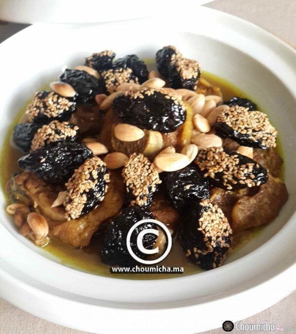

Dans une marmite sur feu doux, faire revenir la viande avec l'oignon et l'ail pendant 2 mn.
Ajouter les épices, le bouquet d'herbes, le Smen, et l'eau.
Couvrir et laisser cuire à feu doux jusqu'à ce que la viande devient tendre et la sauce réduite.
Dénoyauter les pruneaux et les placer dans une marmite large, rajouter l'eau, le sucre, le beurre, la cannelle et le sel.
Couvrir et laisser confire les pruneaux à feu doux pendant 15 à 20 mn.
Disposer la viande dans un plat et la garnir de pruneaux confits.
Mélanger de la sauce de la viande avec un peu de sirop de pruneau et en napper la viande. Garnir le plat d'amandes et de graines de sésame
. 